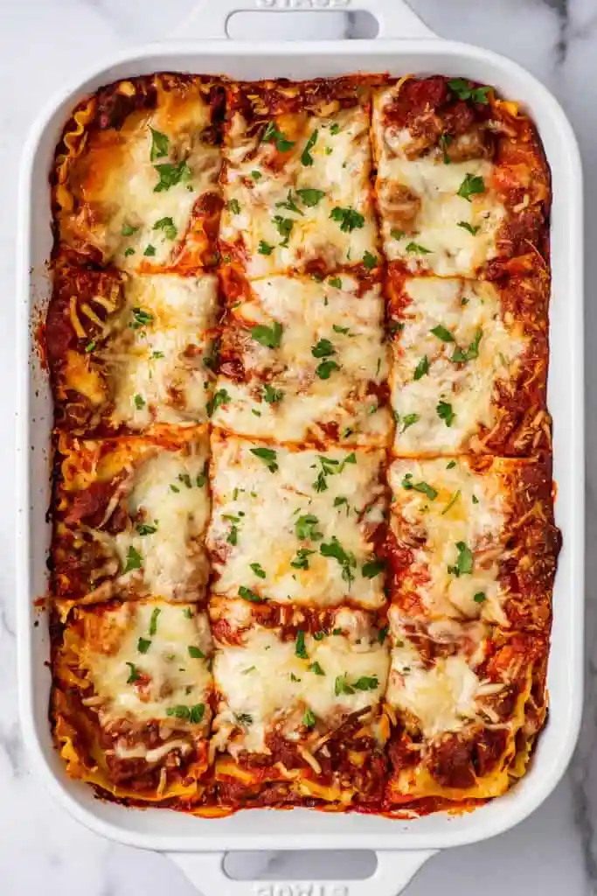

Italian Lasagna
Delicious Italian lasagna layered with a homemade tomato sauce, herby ricotta cheese, chunks of Italian sausage, and lots of mozzarella and provolone. Serve with crusty Italian bread.
Ingredients:
Sauce and Sausage:
- 9 thick slices bacon, diced
- 1 medium onion, chopped
- 2 (28 ounce) cans tomato sauce
- 1 ½ teaspoons Italian seasoning
- 1 teaspoon fennel seed
- 1 teaspoon dried oregano
- 2 pounds Italian sausage links
Lasagna:
- 2 pints part-skim ricotta cheese
- ⅓ cup milk
- 2 large eggs
- 2 teaspoons chopped fresh parsley
- 1 teaspoon dried oregano
- 1 (16 ounce) package uncooked lasagna noodles
- 8 slices provolone cheese
- 6 cups shredded mozzarella cheese
Directions
Step 1
Make the sauce: Brown bacon and onion in a large pan over medium heat until bacon is crisp and onion is translucent, 7 to 9 minutes. Stir in tomato sauce, Italian seasoning, fennel seed, and oregano. Reduce the heat to low, cover, and simmer until thick, 4 to 6 hours.
Step 2
Cook the sausage: When the sauce is almost ready, brown sausage links in a large skillet. Drain on paper towels and cut into 1-inch pieces.
Step 3
Make the lasagna: Mix ricotta cheese, milk, eggs, parsley, and oregano together in a medium bowl.
Step 4
Spread 1 cup sauce over the bottom of a 9x13-inch pan. Layer with 1/3 of the lasagna noodles, 1/2 of the ricotta mixture, 1/2 of the sausage pieces, 2 cups mozzarella, 4 slices provolone, and 1/3 of the sauce. Repeat layers once more, then top with remaining noodles. Spread remaining sauce over noodles and sprinkle with remaining mozzarella.
Step 5
Bake in the preheated oven for 1 1/2 hours.
Nutrition Facts (per serving)
- 944 Calories
- 64g Fat
- 43g Carbs
- 50g Protein